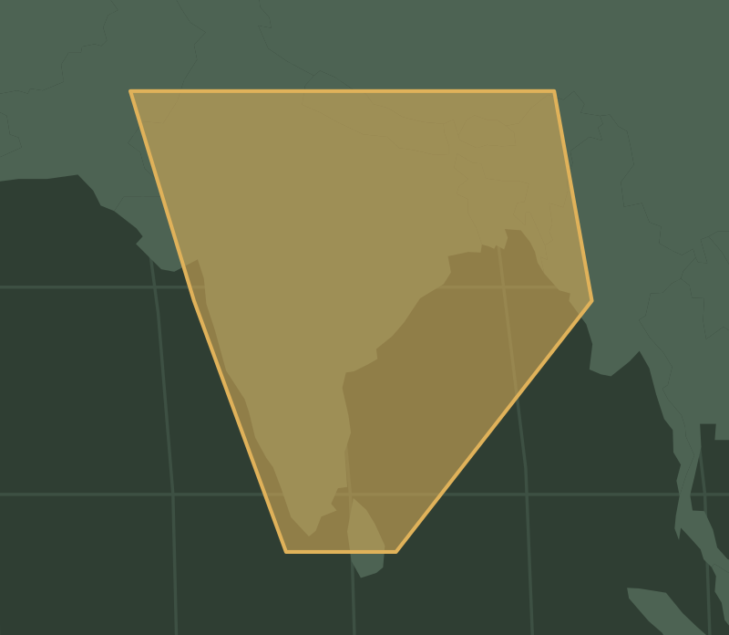

Planta · Convolvuláceas · Subcontinente indio
Rosa lisérgica
Argyreia nervosa (Burm.f.) Bojer
Una enredadera trepadora del subcontinente indio, llamada también rosa de madera hawaiana, cuyas semillas contienen alcaloides ergolínicos. Su uso psicoactivo es reciente, mientras que sus raíces y hojas tienen larga historia en la medicina ayurvédica.1235
También se llamarosa lisérgica · rosa de madera hawaiana · Hawaiian baby woodrose · elephant creeper · woolly morning glory · bidhara · Argyreia speciosa
- Qué es
- Enredadera perenne de la familia de las campanillas
- Territorio
- Subcontinente indio; introducida en Hawái, África y el Caribe
- Parte usada
- La semilla; la raíz en la medicina ayurvédica
- Principios activos
- Alcaloides ergolínicos, entre ellos ergina (LSA)
- Empieza y dura
- Sin datos fiables en las fuentes consultadas
- Quién guarda su memoria
- Medicina ayurvédica; uso psicoactivo moderno desde los años sesenta
Botánica
Una campanilla gigante
Argyreia nervosa es una enredadera trepadora perenne de la familia de las convolvuláceas, nativa del subcontinente indio e introducida en numerosas regiones del mundo, entre ellas Hawái, África y el Caribe.5
Sus nombres comunes incluyen «elephant creeper», «woolly morning glory» y «Hawaiian baby woodrose».1 A pesar de su nombre popular, no es originaria de Hawái.1
Se reconocen dos variedades botánicas: nervosa y speciosa; las raíces de esta última se emplean en la medicina ayurvédica.2
Se cultiva por su valor ornamental y medicinal, aunque puede ser invasora.1 Donde la temperatura baja de 13 °C se cultiva en invernadero cálido.6
- Familia
- Convolvulaceae
- Hábito
- Enredadera perenne
- Variedades
- nervosa y speciosa
- Parte usada
- Semilla
Memoria y tradición
De la medicina ayurvédica a las semillas psicoactivas
La variedad speciosa se usa en la medicina ayurvédica, con raíces que se consideran de gran valor medicinal.2
Sus propiedades psicoactivas se dieron a conocer en los años sesenta.6 En 1965 un artículo en Science sobre alcaloides ergolínicos de esta planta la llevó a la escena de las drogas.3
Entre 1968 y 1969 se distribuyeron y se usaron de forma recreativa semillas de Argyreia nervosa y de Ipomoea violacea en Estados Unidos.7
Un libro de 1972 sobre el uso psicoactivo de plantas cuenta que hawaianos pobres la consumían para un «colocón barato».7
Shawcross revisó en 1983 su botánica y su química, y reunió informes de uso a partir de la literatura popular, autoexperimentación y un panel de voluntarios.3
Sus semillas son conocidas por su potente efecto enteogénico, con personas que informan de experiencias psicodélicas y espirituales.2
En el tiempo
Primeras publicaciones sobre su química; se identifica tentativamente la amida del ácido lisérgico.7
Uso recreativo en Estados Unidos.7
Miller identifica la amida del ácido lisérgico y la isolisérgica como alcaloides principales.8
Un libro cuenta su consumo entre hawaianos pobres.7
Sus nombres
- rosa lisérgica
- nombre en español
- Hawaiian baby woodrose
- inglés
- elephant creeper
- inglés
- bidhara
- nombre ayurvédico
El nombre «rosa de madera hawaiana» es engañoso: la planta es de la India.1
Territorio y cuidado
De la India a los trópicos

Qué ayuda
- Conocerla como planta ayurvédica y ornamental.
- No cultivarla en zonas donde pueda invadir.
- Distinguir su uso medicinal del uso psicoactivo moderno.
Qué contiene
Alcaloides ergolínicos
Las semillas contienen alcaloides ergolínicos como la ergina (amida del ácido lisérgico, LSA) y la isoergina.1
Estudios posteriores señalan también ergometrina, lisergol, ácido lisérgico y otros alcaloides, y se ha informado de metilergometrina y metisergida, que se creían exclusivamente sintéticas.56
En Ipomoea tricolor, planta emparentada, la concentración de ergolinas en las hojas es doce veces menor que en las semillas.1
Los alcaloides de las semillas varían mucho de una a otra.6
El glucósido argirósido es exclusivo de Argyreia nervosa.4
Alcaloide principal de las semillas.[1][8]
Presente junto a la ergina.[1]
Hallada en estudios más recientes.[5]
La experiencia
Una experiencia psicodélica descrita por usuarios
Las personas que la han usado informan de experiencias psicodélicas y espirituales importantes.2
No hay datos fiables de aparición ni de duración.
Investigación
Qué se ha estudiado
Hay revisiones de su botánica y su química y estudios fitoquímicos de las semillas.38
No hay estudios clínicos de su uso psicoactivo.
Alcance de estos datosQuímica bien documentada; sin estudios clínicos.
Con cuidado
Lo que conviene saber antes
Para seguir
Libros y medicinas emparentadas
Fuentes
De dónde sale cada dato
- Wikipedia. Argyreia nervosa. en.wikipedia.org/wiki/Argyreia_nervosa.
- Wikiwand. Argyreia nervosa (Hawaiian baby woodrose). wikiwand.com/en/articles/Hawaiian_baby_woodrose.
- Shawcross WE. Recreational use of ergoline alkaloids from Argyreia nervosa. J Psychoactive Drugs. 1983. bibliography.maps.org/resources/download/14848.
- Wikipedia. Argyreia nervosa (glucósidos y ergolinas). en.wikipedia.com/wiki/Argyroside.
- Earthpedia. Hawaiian baby woodrose (Argyreia nervosa). earthpedia.earth.com/plant-encyclopedia/angiosperms/convolvulaceae/argyreia-nervosa.
- Wikiwand. Elephant creeper (Argyreia nervosa). wikiwand.com/en/articles/Elephant_creeper.
- Erowid. Hawaiian baby woodrose (Argyreia nervosa): timeline. erowid.org/plants/hbw/hbw_timeline.php.
- Miller MD. Isolation and identification of lysergic acid amide and isolysergic acid amide as the principal ergoline alkaloids in Argyreia nervosa. J AOAC. 1970;53(1):123-127. taz4.erowid.org/plants/hbw/hbw_info1.shtml.
- RxList. Hawaiian baby woodrose. rxlist.com/hawaiian_baby_woodrose/supplements.htm.
- Mapa APDER, con datos de Natural Earth · dominio público
- Dibujos de moléculas APDER
Última revisión: 24 de noviembre de 2026. Si ves un error, escríbenos a info@apder.org.